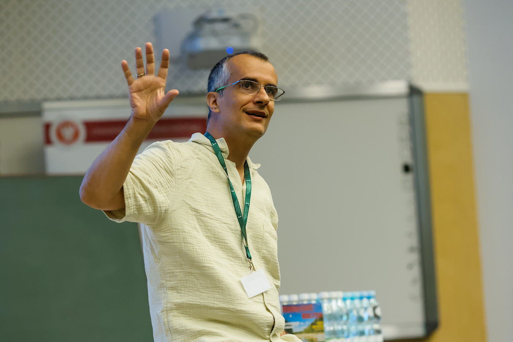

Scientific programme
Geometric structures for PDEs, field theories and integrability, centred on k-contact and jet geometry.
I develop geometric frameworks that reveal the structure of PDEs, field theories, reductions, symmetries and integrable systems. The current frontier is the use of k-contact geometry and jet geometry as a unifying language for non-conservative field theories, transformations and geometric methods beyond the standard jet setting.

Geometric structures for PDEs, field theories and integrability, centred on k-contact and jet geometry.
Developing k-contact geometry as a new intrinsic language for jets, PDE transformations, reductions and non-conservative field theories.
Gamma Research Group, PhD and master pipeline, weekly seminars and international collaborators supporting a coherent research agenda.
IAS invitation, Simons–CRM Professorship, recent k-contact/jets papers and an active international seminar network.
The central question is whether modern contact-type and jet-type geometries can become a structural language for differential equations, field theories, transformations, reductions and integrability phenomena.
My recent work builds a coherent programme around k-contact geometry, jet bundles, integrable systems, Hamilton–Jacobi theory and geometric reduction. The objective is not merely to translate known symplectic or contact constructions into field theory. The objective is to identify the intrinsic geometric structures that encode PDEs, non-conservative dynamics, symmetries, transformations and reduction procedures in a common formalism.
This page is deliberately organised as a two-layer profile. The first layer states the research vision and capacity. The expandable layer preserves the full archival function of the website: publications, students, talks, theses, seminars and resources.
Development of k-contact geometry as a framework for non-conservative field theories, reduction, Hamilton–Jacobi theory and dissipative PDE models.
Recognition of jet bundles through higher-order polarised k-contact structures, with applications to symmetries, invariant submanifolds and transformations.
Geometric study of integrability mechanisms, transformations, superposition phenomena, Lax-type structures and symmetry-based methods for differential equations.
Marsden–Weinstein-type reductions, energy-momentum methods, stability, multisymplectic and related geometric structures.
The full publication list remains on the main information page.
The Gamma Research Group is an internationally oriented research environment at the University of Warsaw, focused on geometric methods in mathematics and mathematical physics. It supports a research programme on jets, symmetries, PDEs, field theories, geometric mechanics, integrable systems and modern reduction methods.
The full page records PhD, master's and bachelor's supervision. Recent student topics include k-contact geometry, supersymplectic geometry, Cartan bundles, orbifold reduction, Lie group symmetries, vector bundle invariants, Clifford algebras, Lie algebroids, energy-momentum methods and energy-Casimir methods.
Current visible group/collaboration network includes B.M. Zawora, J. Lange, A. Maskalaniec, T. Sobczak, X. Rivas, S. Vilariño, A. Lopez-Gordon, M. Krych and other collaborators involved in k-contact geometry, reductions, field theories, integrable systems and geometric mechanics.
This page is organised in two layers. The opening section presents the scientific programme, current frontier, research environment and international standing in a compact form. The expandable sections retain the supporting record -- publications, students, theses, talks and resources -- so that readers first see a coherent research agenda and can then move naturally to the full archive.
This research profile complements the full information page. It offers a compact overview for external readers while preserving the website as a complete information and archive centre.